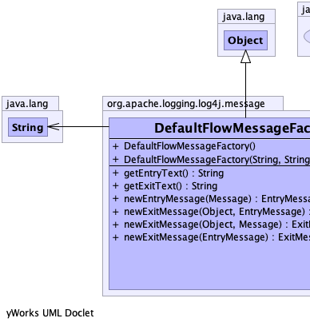
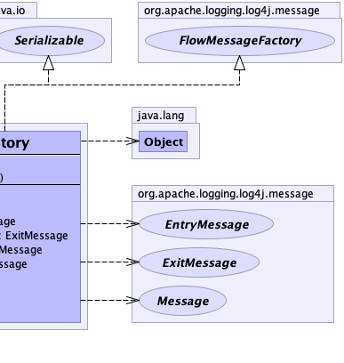

public class DefaultFlowMessageFactory extends java.lang.Object implements FlowMessageFactory, java.io.Serializable
|  |  |
| Constructor and Description |
|---|
DefaultFlowMessageFactory()
Constructs a message factory with
"Enter" and "Exit" as the default flow strings. |
DefaultFlowMessageFactory(java.lang.String entryText,
java.lang.String exitText)
Constructs a message factory with the given entry and exit strings.
|
| Modifier and Type | Method and Description |
|---|---|
java.lang.String |
getEntryText()
Gets the entry text.
|
java.lang.String |
getExitText()
Gets the exit text.
|
EntryMessage |
newEntryMessage(Message message)
Creates a new entry message based on an existing message.
|
ExitMessage |
newExitMessage(EntryMessage message)
Creates a new exit message based on no return value and an existing entry message.
|
ExitMessage |
newExitMessage(java.lang.Object result,
EntryMessage message)
Creates a new exit message based on a return value and an existing entry message.
|
ExitMessage |
newExitMessage(java.lang.Object result,
Message message)
Creates a new exit message based on a return value and an existing message.
|
public DefaultFlowMessageFactory()
"Enter" and "Exit" as the default flow strings.public DefaultFlowMessageFactory(java.lang.String entryText,
java.lang.String exitText)
entryText - the text to use for trace entry, like "Enter".exitText - the text to use for trace exit, like "Exit".public java.lang.String getEntryText()
public java.lang.String getExitText()
public EntryMessage newEntryMessage(Message message)
FlowMessageFactorynewEntryMessage in interface FlowMessageFactorymessage - the original messagepublic ExitMessage newExitMessage(EntryMessage message)
FlowMessageFactorynewExitMessage in interface FlowMessageFactorymessage - the original entry messagepublic ExitMessage newExitMessage(java.lang.Object result, EntryMessage message)
FlowMessageFactorynewExitMessage in interface FlowMessageFactoryresult - the return value.message - the original entry messagepublic ExitMessage newExitMessage(java.lang.Object result, Message message)
FlowMessageFactorynewExitMessage in interface FlowMessageFactoryresult - the return value.message - the original message